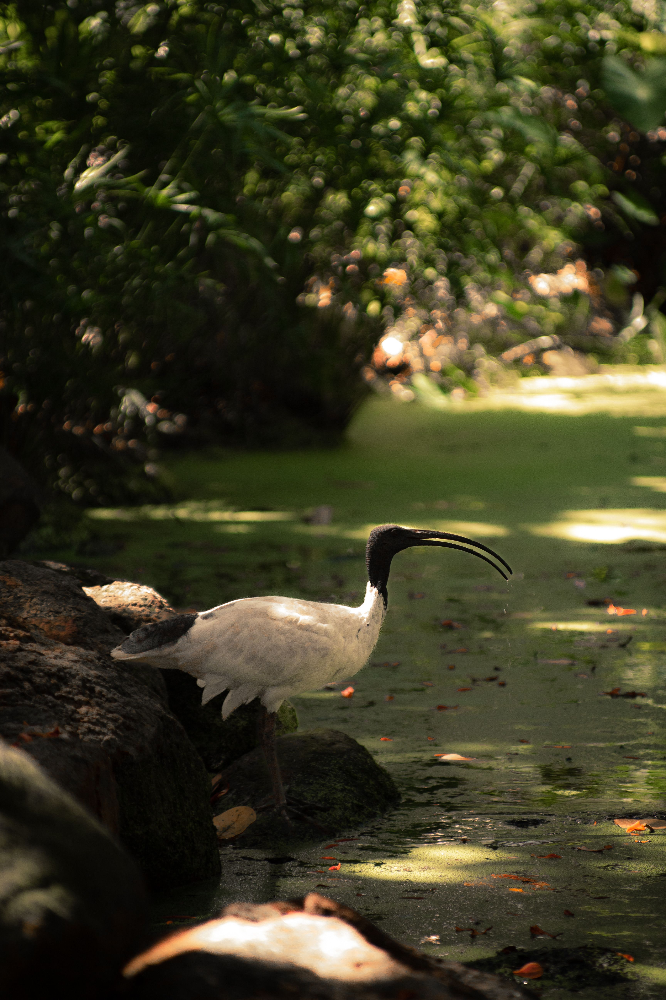

The Australian Ibis, also known as the Australian White Ibis, is a large long-legged ibis with a mostly white body, black head and neck, and a long curved bill. It occurs naturally in wetlands, floodplains and grasslands but is also highly successful in parks and urban areas where it searches for food.